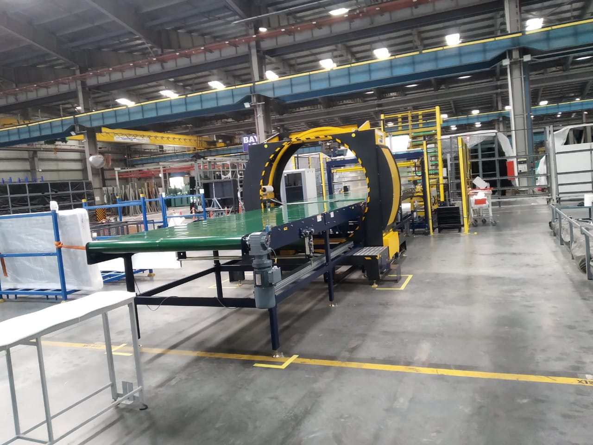

Role and Responsibilities
Design and Planning Engineer
I joined Saint-Gobain India Private Limited on July 1, 2019 as a Graduate Engineering Trainee out of college. I received extensive training on manufacturing and processing methodologies of glass used for a variety of purposes ranging from those used in Facades to those used in automobiles. I was assigned two projects as a part of the training at 2 different manufacturing plants in two different functions namely the Warehouse and Cutting line. Following the completion of my two projects, I transitioned into the role of a Design and Planning Engineer for a green-field project involving the setup of a highly specialized, automated, state of the art Windows plant. Being a part of the project from almost the very beginning, I had the opportunity to learn directly from the very best in the industry and effectively contributed in the planning of the whole layout, process flow and majorly contributed in the design of material handling system for the whole plant.
Prepared detailed 3D CAD Drawings of trolleys,racks and other storage equipment using Solidworks/Creo. A few of my designs are shown below.
Planned and designed the layout of the Warehouse for Windows. Implemented a palletised racking systems with about 540 SKU's categorised as runners, repeaters and strangers. Managed a team of 7 people running the day to day operations of the warehouse.
Simulated the rack designs using ANSYS for the maximum stresses and deflections.
Collaborated with different machine suppliers, ensuring on time delivery of machines. Helped define the specifications and the function for the Window Stretch Wrapping machine.
Being in a project team, my role was pretty dynamic and I was exposed to a variety of different challenges throughout my period of stay. I also hand the opportunity to interact with Machine suppliers and engineers from other countries. Few pictures of the line setup are shown below.
Graduate Engineering Trainee
Reorganized a warehouse increasing the capacity of the warehouse by about 4000 tonnes of glass. Categorised and arranged the different SKU's to enable easy access to items that were sold in higher volumes. This reduced the time from order receipt to dispatch.
Simplified the cullet(broken pieces of glass) cleaning process from under the cutting line conveyor.